The closer you walk toward the centre, the fewer may follow. That single rule governed both the Vedic temple campus and the Tabernacle Moses built — not as decoration, but as theology made of stone, curtain, and fire.
Students of religion often treat Hindu and Hebrew worship as worlds apart. One speaks Sanskrit and circles a lingam in a dark inner room; the other speaks Hebrew and faces an Ark behind a woven veil. Yet when you set the sources side by side — Śruti, Smriti, the Law of Moses, and the prophets — a remarkable pattern appears. Both cultures organised sacred space in concentric degrees of holiness. Both treated ritual impurity as a temporary barrier, not a moral verdict. Both fed the divine presence with fire, fragrance, food, oil, and the first-fruits of the land.
On chronology: the priestly temple tradition of Israel — the Tabernacle of Moses and the Law given at Sinai, including the ritual instructions of Exodus, Leviticus, and Deuteronomy — belongs to the second millennium BC as Scripture records it. The classical Vedic śruti, by the usual scholarly dating of the Rigveda and later texts, comes much later (commonly placed around 1500–1200 BC onward, with much debate). Vedic culture began long after the Law of the Tabernacle and the Law of Moses. That ordering does not rank souls; it tells us which pattern came first — and which cultures may be carrying echoes of it.
This article is a thorough comparative study of fourteen structural and ritual parallels — from the sacred veil and doorpost signs to Holika Dahan, yajna, pakwan and Seder, prayer shawls, anointing, and the Ark of the Covenant carried on acacia wood.
Disclaimer
2:22 Church publishes this study as gospel teaching and comparative witness, not as a peer-reviewed academic paper. Hindu, Jewish, and Western scholars disagree on the dating of Vedic texts, the history of ritual transmission, and whether specific parallels imply direct contact or independent development. We state our chronology openly: the Tabernacle and the Law of Moses are received as Scripture records them; the classical Vedic śruti is placed later by the usual scholarly range cited above. Reference photographs and diagrams are for illustration only — they do not, by themselves, prove borrowing or historical contact. We do not mock Hindu devotion, nor do we claim that every worshipper knowingly “copied” Moses. We do state plainly that Vedic temple rites, as commonly practised, are not directed to the God of Abraham, Isaac, and Jacob — while many of their forms may echo worship God first gave at Sinai. Nothing here is offered as a condition of fellowship; every reader is invited to test all things by Scripture alone.
01Graded Sanctity — Garbhagriha & Holy of Holies

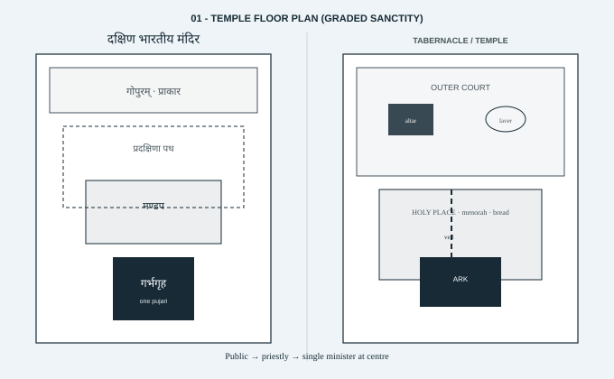
गर्भगृह · मण्डप · प्राकार — קֹדֶשׁ · הֵיכָל · קֹדֶשׁ הַקֳּדָשִׁים
Graded sanctity: public courtyard → priestly hall → one minister in the inner chamber.
Both traditions structured sacred space as a journey inward — from what is public, to what is priestly, to what only one purified minister may enter.
Indian tradition
The prākāra (outer complex) welcomes all who come to worship. The maṇḍapa is the pavilion where preparations, music, and secondary rites occur — still sacred, but not the innermost mystery.
The garbhagṛha (“womb chamber”) is small, often dark, housing the mūrti or emblem of divine presence. Only the head pujārī, after snāna and mantra, enters to offer the direct worship.
Hebrew tradition
The Outer Court received Israel and the nations’ sacrifices at the bronze altar. The Holy Place (Kodesh) held the Menorah, the Table of Showbread, and the Altar of Incense — accessible only to officiating priests in linen.
Behind the Parochet (veil) stood the Holy of Holies (Kodesh HaKodashim), containing the Ark. After the golden calf, entry was restricted to the High Priest — and after the monarchy, once a year on Yom Kippur (Leviticus 16).
The geometry differs — circle and square — but the logic is identical: holiness is spatial, progressive, and guarded. To rush inward without purification is not devotion; it is violation.
02Sacred Veil — Parda & Parochet
A woven barrier stands between the people and the holiest presence.
Not everyone may see everything. Both traditions hang a veil — cloth boundary between outer worship and inner mystery.
Parda · Javanika
The parda or javanika screens the garbhagriha. Devotees see the deity only when the curtain is drawn open for darśan; the veil itself teaches that divine presence is guarded, not casual.
Parochet
Exodus describes the parochet — blue, purple, and scarlet yarn with cherubim — hung before the Ark (Exodus 26:31–33). Only the High Priest passed it, once a year. The veil was theology in fabric.
“You shall make a veil of blue and purple and scarlet yarns and fine twined linen… and the veil shall separate for you the Holy Place from the Most Holy.”
Exodus 26:31–3303Doorpost Holy Signs
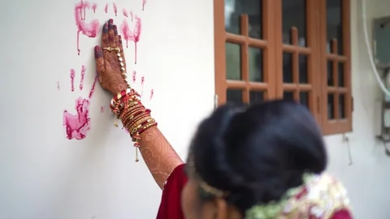
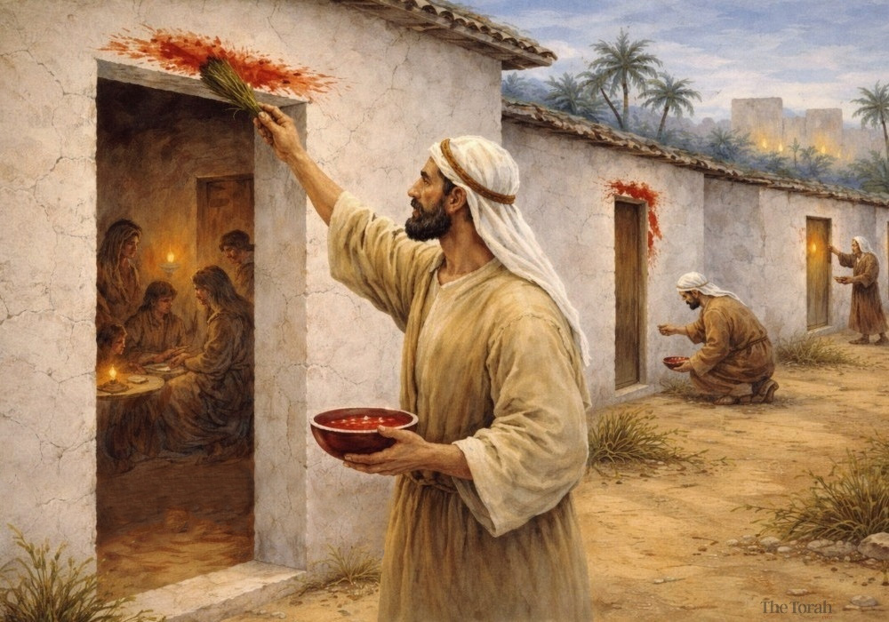
Holy marks on the doorframe — threshold between home and judgment, blessing and deliverance.
Holiness does not stay inside the temple. It marks the doorpost — the place where household meets heaven.
Threshold signs — India
Red kumkum handprints, toran of mango leaves, and festival marks on the lintel declare a home under blessing — especially at weddings and gṛhapraveśa (house-entering rites).
Mezuzah · Passover blood
Israel marked doorposts with lamb’s blood in Egypt (Exodus 12:7). Ever after, the mezuzah — Scripture in a case on the doorframe — reminded each household that God claims the threshold (Deuteronomy 6:9).
04Ritual Immersion — Snanam & Mikveh
Temporary impurity blocks the shrine until immersion and prescribed rites.
In neither tradition does ritual impurity mean “God hates you.” Asaucham in Sanskrit and ṭum’ah in Hebrew describe a temporary state that blocks access to holy ground until removed by time, washing, or prescribed rites.
Contact with death
- Sutak — family mourning periods after a death; home temporarily set apart.
- Cremation grounds and corpse-handling carry extended defilement in Dharmaśāstra traditions.
Numbers 19 — Red Heifer
- Touching a corpse brings seven days of impurity.
- Purification requires sprinkling with ashes of the para aduma (red heifer) — a ritual unique in its difficulty.
Childbirth
Regional Hindu practice often observes 11 to 40 days before the mother returns to temple worship — rest, dietary rules, and family seclusion.
Leviticus 12
Moses prescribes specific days of separation for a mother after birth, then an offering to restore her to assembly worship.
Bodily emissions — blood, seminal flux — trigger impurity in both systems. Restoration comes through immersion: the snāna / river bath in India, the mikveh in Israel. Again: the categories match.
05Incense — Dhupa & Ketoret
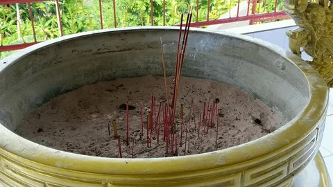
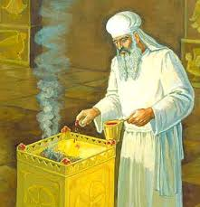
Fragrant smoke morning and evening — dhupa in shodashopachara; ketoret before the veil.
Sweet smoke rises. Prayers ride on it. The air of the sanctuary is changed.
Dhupa — India
Dhūpa is indispensable in ṣoḍaśopacāra (the sixteenfold daily service): resins such as guggulu, camphor (karpūra), sandal, and herbs. It purifies the atmosphere and “pleases” the deity’s presence.
Ketoret — Israel
The ketoret blend (frankincense, stacte, onycha, galbanum — Exodus 30:34–38) burned morning and evening on the golden altar before the veil. Compounding it for private use was forbidden — the recipe was guarded like a state secret.
“Aaron shall burn fragrant incense on it; every morning when he dresses the lamps he shall burn it, and when Aaron sets up the lamps at twilight, he shall burn it…”
Exodus 30:7–806Pranam vs Bowing
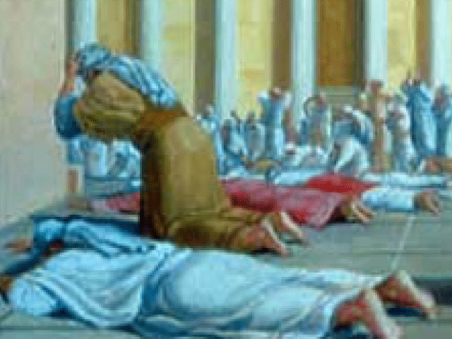
Pranam vs bowing — worship as bodily surrender before the holy.
Worship is not only speech. It is body surrendered.
Daṇḍavat & ṣaṣṭāṅga
Daṇḍavat praṇāma — falling flat like a staff. Ṣaṣṭāṅga — “six limbs” touching earth: toes, knees, hands, chest, chin, and mind. Total self-emptying before the Lord.
Korim u-Mishtachavim
Prophets and kings “fell on their faces” before the Ark or the glory of the Lord. Temple worship assumed full prostration on stone — not casual nodding, but the body itself confessing smallness.
“…they fell on their faces and said, ‘God, the God of the spirits of all flesh…’”
Numbers 16:2207Samai & Menorah — Seven Lights
Seven lights — samai wick-points and menorah branches both mark perpetual sacred flame.
Once a place is consecrated, the light must not die — and both lamps speak in sevens.
Samai · Akhanda Dīpa
The samai stands with seven oil points (often a star of wick-notches around the bowl plus the central finial). The akhaṇḍa dīpa — unbroken flame — burns before the deity as a sign that divine consciousness never sleeps.
Menorah — Ner Tamid
Exodus commands a menorah of seven branches — three on each side of the central stem (Exodus 25:32). Tended morning and evening, the ner tamid became the eternal light before every Ark.
“Command the people of Israel to bring you pure oil of beaten olives for the light, that a lamp may regularly be set up to burn…”
Leviticus 24:208Naivedyam / Pakwan & Seder Offering
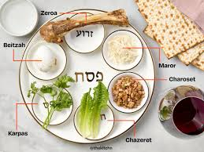
Pakwan and Seder — five or six key foods arranged as covenant meal before God.
God is honoured with food — not random dishes, but a fixed set of items with meaning.
Pakwan · Naivedyam → Prasādam
Temple pakwan (cooked offering) is served in a compartment tray — typically five or six items: rice, dal, vegetable, bread or sweet, salad, and dessert. After acceptance, it becomes prasādam shared with priests and devotees.
Seder · Lechem HaPanim
The Passover Seder plate holds six symbolic foods — maror, charoset, karpas, zeroa, beitzah, chazeret — each recalling Exodus. In the Temple, twelve loaves of showbread stood weekly before the LORD.
“You shall set them in two piles, six in a pile, on the table of pure gold before the LORD.”
Leviticus 24:609Prayer Shawl — Uttariya & Tallit
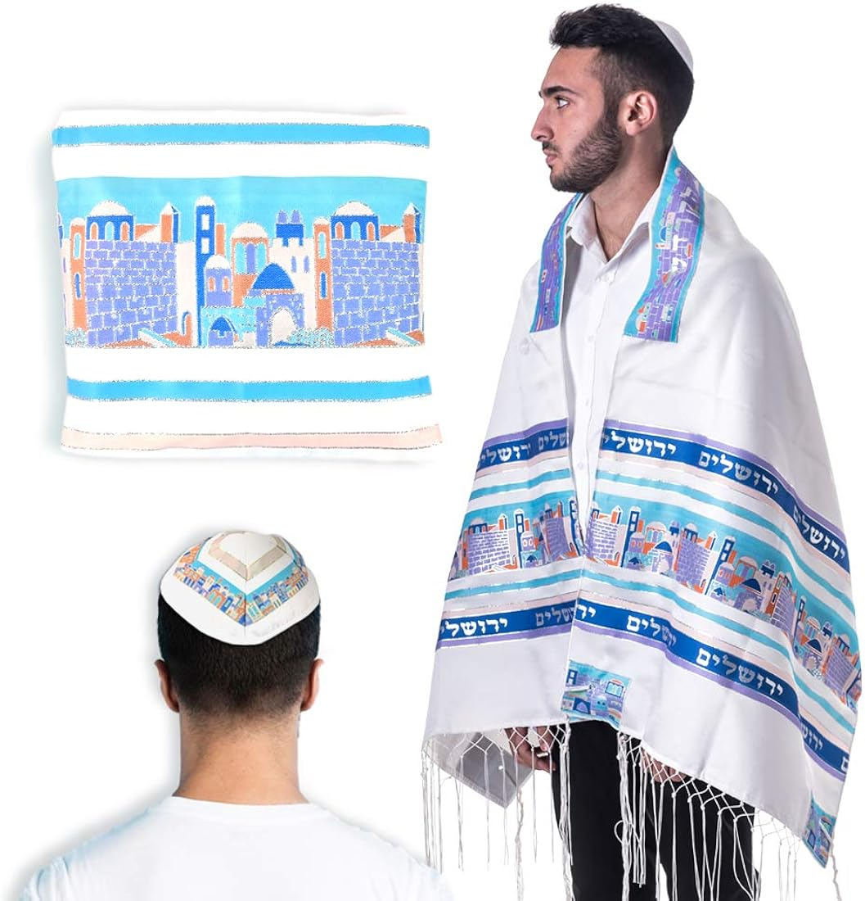
Prayer shawl — marked cloth that frames worship before the holy.
Before speech, the body is clothed for prayer.
Uttarīya · Angavastram
Devotees drape a saffron or white uttariya / angavastram over the shoulder when entering the mandir or sitting for pūjā. The cloth marks reverence, modesty, and separation from ordinary street dress.
Tallit · Tzitzit
Jewish men wrap the tallit for morning prayer and Shabbat — its tzitzit fringes with a blue thread recall the commandments (Numbers 15:38–39). The shawl itself becomes a portable “holy place” around the worshipper.
10Anointing — Abhisheka & Shemen HaMishchah
Anointing — oil sets persons and vessels apart for holy service.
To anoint is to transfer holiness from common to set-apart.
Abhiṣeka
Abhiṣekam pours milk, honey, ghee, curd, and water (pañcāmṛta) or chandan (sandal paste) over the deity or a king at coronation.
Shemen HaMishchah
Exclusive olive oil compounded with myrrh, cinnamon, and cassia (Exodus 30:22–33). Moses anointed Tabernacle, vessels, Aaron, and later the kings. The formula was forbidden for ordinary use.
11First Fruits — Agra-Puja & Bikkurim
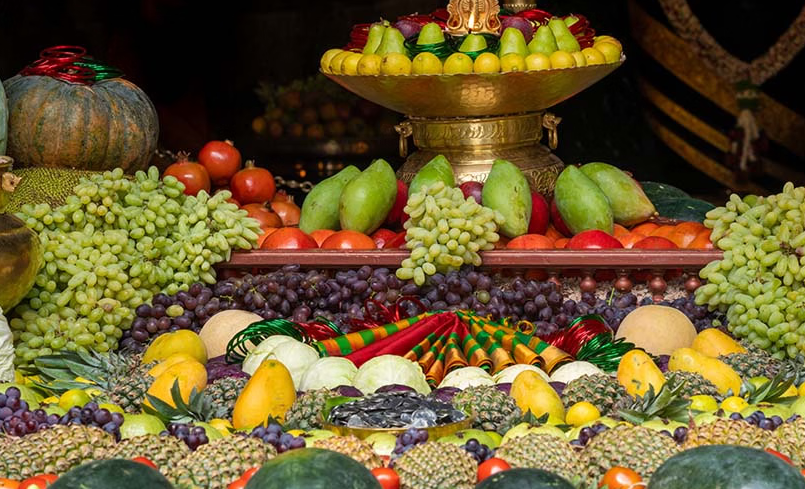
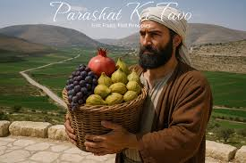
First yield of field and flock sustains the temple and priesthood.
Temples do not run on sentiment. They run on first-fruits returned to God.
Dakṣiṇā & Agra-Pūjā
Farmers bring the first sheaf, first fruit, or first milk to the local shrine before the household eats. Dakṣiṇā sustains the priesthood.
Bikkurim & Ma’aser
Bikkurim — firstfruits procession to Jerusalem. Ma’aser — tithes of grain, wine, and oil for Levites (Numbers 18). The nation’s worship was economically embedded.
12Sacred Fire — Holika, Yajna & Burnt Offering
Fire consumes the offering wholly — community bonfire, yajna altar, and national Mizbeach.
Among the most dramatic public parallels is fire that takes away sin and impurity. Before Holi, millions gather for Holika Dahan — lighting a bonfire, often with effigy or symbolic burning, praising the victory of devotion over malice, and passing through smoke and flame as purification. The Vedic world already knew fire-altar logic: the havan kunda (हवन कुण्ड), yajna vedi, and yadnya / homa (यज्ञ) where ghee, grains, and herbs are fed to agni so that smoke carries the gift upward — the priest tending fire as mediator between earth and heaven.
Indian / Vedic fire
- Holika Dahan — annual sacred bonfire; burning as release of evil and seasonal renewal.
- Yajna · Homa · Havan — the tiered homa kuṇḍa receives sacrificial offerings; fire is agni, witness and carrier of the gift.
- Yadnya — the full sacrificial rite: mantras, fire, and offering together; not spectacle but covenant logic made of flame.
- Fire is not decorative; it transforms what is placed in it (offerings, symbols, impurity).
Hebrew burnt offering
- Olah (burnt offering) — the whole sacrifice ascends in smoke “as a pleasing aroma to the LORD” (Leviticus 1:9).
- Mizbeach (bronze altar) stood in the outer court; fire was kept burning and not allowed to go out (Leviticus 6:12–13).
- Israel’s national worship was unimaginable without blood and fire at the centre of the camp.
“If his offering is a burnt offering from the herd… it shall be accepted for him to make atonement for him… the priest shall burn all of it on the altar, as a burnt offering, a food offering with a pleasing aroma to the LORD.”
Leviticus 1:3–9The gospel does not abolish the logic of fire but fulfils it: one offering, fully consumed in love, and the smoke of praise rising from a single cross outside the city.
13Palkhi & Ark of the Covenant
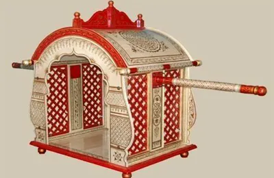
The presence of God borne on poles among the people on pilgrimage.
If fire answers the question “how is guilt removed?”, the portable throne answers “how does God travel with His people?” In Maharashtra and across India, the palkhi (पालखी) — a palanquin shrine — carries the utsava murti of a saint or deity for wari pilgrimage and temple festivals. Devotees bear the poles; the image passes among the crowds; the whole road becomes sacred corridor.
Palkhi / rath culture
- The deity’s presence is mobile — brought into villages that cannot all travel to the stone temple.
- Bearing the poles is an honour and a discipline; the community walks with the image.
- Rath Yatra (chariot festival) extends the same logic on wheels — Lord “comes out” to the people.
Ark of the Covenant
- Gold-overlaid acacia box with cherubim; carried on poles inserted through rings — not touched by common hands (Exodus 25:14–15).
- Only designated Levites bore it; when Uzzah steadied it with his hand, judgment followed (2 Samuel 6:6–7) — holiness and danger together.
- When the Ark crossed Jordan or circled Jericho, the nation’s victory and identity moved with it (Joshua 3–6).
“You shall put the poles into the rings on the sides of the ark to carry the ark by them. The poles shall remain in the rings of the ark; they shall not be taken from it… they shall not go in to look on the holy things even for a moment, lest they die.”
Exodus 25:14–15; Numbers 4:20David danced before the Ark when it came home — not casual celebration, but the joy of a king before the footstool of the Most High (2 Samuel 6:14). The form of the palkhi and the form of the Ark differ; the question is the same: who is allowed to carry the presence of God among men?
14Prayer Cap — Topi & Kippah
Prayer cap — topi, pheta, and rumal beside the kippah.
Who may stand before God? Both traditions answer with what covers the head — not only the large turban of procession, but the simple cap of daily prayer.
Topi · Pheta · Pagri · Rumal
From the white topi at upanayana to the brocade pheta at weddings, Hindu ceremony marks the head as set apart. The shoulder rumal and folded pagri complete the dress of shrine and festival.
Kippah · Mitznefet
Every Jewish man covers the head in prayer with a kippah — humility before heaven. Aaron and the High Priest wore the mitznefet — a wrapped linen turban — when entering the sanctuary (Exodus 28:4, 37).
Summary: Comparative Terminology
| Concept | Vedic / Indian | Ancient Hebrew |
|---|---|---|
| Inner sanctum | Garbhagṛha | Kodesh HaKodashim (Holy of Holies) |
| Sacred fire | होलिका दहन · यज्ञ / Homa | Olah / Mizbeaḥ (burnt offering) |
| Procession of presence | पालखी / Rath Yatra | Aron HaBrit (Ark of the Covenant) |
| Ritual immersion | Snāna / Snanam | Mikveh |
| Sacred veil | Parda / Javanika | Parochet |
| Prayer shawl | Uttarīya / Angavastram | Tallit · Tzitzit |
| Prayer cap | Topi · Pheta · Rumal | Kippah · Mitznefet |
| Doorpost sign | Hasta cihn · Toran | Mezuzah · Passover blood |
| Food offering | Pakwan · Naivedyam | Seder · Lechem HaPanim |
| Anointing | Abhisheka · Tailam | Shemen HaMishchah |
| Eternal lamp | Samai · Akhanda Dīpa | Ner Tamid (Menorah) |
| Incense | Dhūpa | Ketoret |
| Death impurity | Sutak / Asaucham | Ṭum’ah / Para Aduma |
| First fruits | Agra-Pūjā / Dakṣiṇā | Bikkurim / Ma’aser |
Conclusion: Echoes of Moses, Pointers to the Messiah
When the chronology is weighed honestly, the picture becomes difficult to ignore. Vedic culture arose long after the Law of the Tabernacle and the Law of Moses. Graded sanctity, sacrifice, impurity and cleansing, first-fruits, doorpost signs, sacred fire, anointing, and the rest are not vague human inventions that two civilisations happened to dream up independently — they are spelled out with precision in Torah, above all in the priestly codes and in Deuteronomy, centuries before the classical Vedic record.
To us, the resemblance is very clear: the ritual notions Moses received at Sinai were carried, in fragment and shadow, into many cultures across the ancient world. Vedic temple life preserves that pattern — veil, fire, immersion, offering, procession of presence — yet the Vedic world did not worship the God of Abraham, Isaac, and Jacob. The forms remained; the true Object of worship was lost. What survives in the shrine is not proof that India invented temple logic. It is evidence that the Creator once placed a grammar of holiness before His people, and that grammar did not stay contained in one nation.
That is why this study matters immensely for a Hindu reader willing to ask an honest question: Where did these rituals come from? If the answer is not “we invented them from nothing,” but “they echo something older, something given,” then the next question follows naturally: Who gave them, and why?
We believe the answer is the one God, the Father — who ordered worship so that every washing, every lamp, every offering, every veil, every procession of presence would train the human heart to look for one Mediator, one sacrifice that truly removes sin, one High Priest who enters the true Holy of Holies. Those forms were never ends in themselves. They were signposts along a road that leads to the Messiah — His coming, His death as the one offering that ascends in smoke no bonfire can duplicate, His resurrection as the proof that death’s impurity is overcome, and His ascension as the Son who passed through the heavens and sat down at the right hand of the Father.
“For there is one God, and there is one Mediator between God and men, the Man Christ Jesus, who gave Himself a ransom for all…”
1 Timothy 2:5–6When a Hindu person sees that their own snanam, yajna, naivedyam, and parda are not alien to Scripture but anticipate it, the dots begin to connect. The garbhagṛha was always pointing beyond itself. The veil was always waiting to be torn. The fire was always waiting for the Lamb who takes away the sin of the world. Christ is not one deity among many behind a curtain. He is the Son sent by the Father — crucified, raised, ascended — and the only name under heaven by which we must be saved.
“Therefore, brothers, since we have confidence to enter the holy places by the blood of Jesus, by the new and living way that he opened for us through the curtain…”
Hebrews 10:19–20Faith and baptism in His name are not a rejection of reverence; they are the fulfilment of every instinct the temple ever taught — that God is holy, that sin must be removed, that a way must be opened, and that the worshipper may at last draw near.
Editorial Note
2:22 Church presents this study as an invitation to compare primary sources with open hearts and honest questions. Brand marks on reference photos have been obscured where needed. Scholars continue to debate how ritual patterns travelled — trade routes, migration, oral tradition, or parallel human response to the holy — and we do not claim to settle that debate here. What we do hold, on the basis of Scripture and chronology, is that the Mosaic sanctuary and the Law of Moses precede the classical Vedic record, and that the fourteen parallels listed above are too structured to dismiss as mere coincidence. Our conviction is that God placed a grammar of holiness before Israel so that, even where His name was forgotten, the forms of worship might still point toward the Messiah — His coming, death, resurrection, and ascension. We do not require acceptance of every parallel as proof of ancient borrowing. We do require that Jesus be known as the Man Christ Jesus, the Father’s exalted Son — one God the Father, one Lord, and salvation through His blood alone.